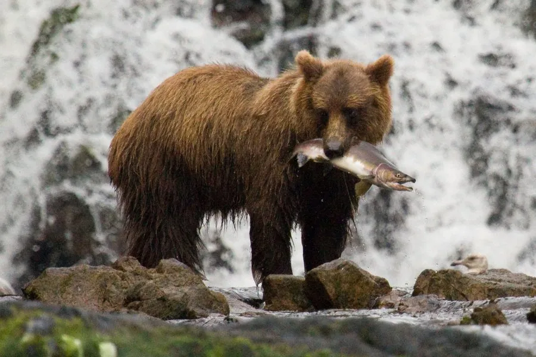

哺乳动物 · 动物界
棕熊 Ursus arctos

欧亚大陆与北美广泛分布的大型熊类，杂食性很强，冬季在洞穴中冬眠并产仔，粗壮的前爪善于挖掘。
- 分类
- 门脊索动物门纲哺乳纲目食肉目科熊科属熊属
- 栖息环境
- 北半球针叶林、混交林、苔原与高山草甸
- 地理分布
- 欧洲、亚洲和北美洲的森林与苔原，中国东北、西北和青藏高原有分布
- 保护级别
- IUCN 无危（LC）；中国国家二级保护动物
物种志
棕熊体长 1.5–2.8 米，肩高 0.9–1.5 米，体重 130–700 kg，亚种间差异极大，科迪亚克棕熊是最大的陆生食肉目之一。它的毛色从浅黄、棕色到深褐不等，肩部隆起一块肌肉峰，前爪粗长，可达 10 cm。
棕熊栖息于北半球的针叶林、混交林、苔原和高山草甸，从欧洲、亚洲到北美洲都有分布。它是杂食动物，春季吃嫩草、浆果、树根和小兽，夏季捕食鱼类的洄游群体，秋季大量进食浆果和坚果积累脂肪。棕熊多在晨昏活动，嗅觉灵敏，可闻到数公里外的腐肉气味。冬季进入洞穴冬眠，体温仅下降几度，仍可被惊醒；怀孕的雌熊在冬眠中产仔，每胎 1–4 仔，幼仔出生时仅约 0.5 kg。中国境内的棕熊被列为国家二级保护动物，野生种群受栖息地压缩影响。
形态与习性
- 食性杂食，嫩草、浆果、树根、鱼和中小型兽类
- 体长1.5–2.8 m，肩高 0.9–1.5 m
- 体重130–700 kg，亚种差异大
- 寿命野外约 20–30 年
- 繁殖冬眠中产仔，每胎 1–4 仔，初生约 0.5 kg
- 冬眠在洞穴中冬眠，体温仅下降几度
- 前爪粗长可达 10 cm，擅长挖掘
趣味知识
- 棕熊冬眠时体温只下降几度，遇到惊扰仍可能醒来。
- 前爪粗长可达 10 cm，是挖掘洞穴和翻找食物的利器。
- 幼仔在冬眠的洞穴中出生，初生时只有约 0.5 kg。
- 棕熊嗅觉灵敏，能闻到数公里外腐肉的气味。
生态关系
- 捕食 → 大马哈鱼 秋季棕熊捕食洄游鲑鱼